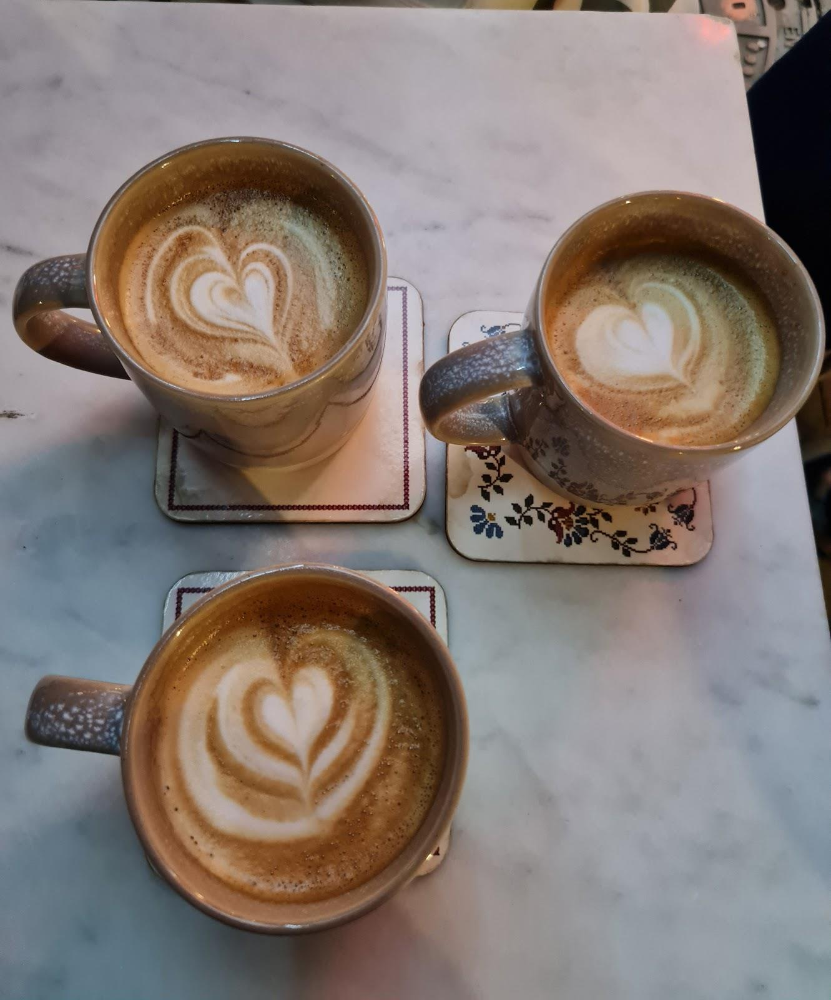

“Mekân çok şık konseptine bayıldık. Kahve içmek için tercih edilecek bir yer.”
Fatıma Ateş BÜLBÜL
Google yorumunu aç ↗
KAYABAŞI / İSTANBUL
Bir fincanın etrafında buluşmak için.
Si Coffee Roastery’ye uğrayın.
FİNCANIN YANINA
Kahvenizi seçin, yanına bir donut ekleyin.
Günün tatlıları ve kahveleri için bize danışın.
Ürün çeşitleri, fiyatlar ve alerjen bilgisi için işletmeyle iletişime geçebilirsiniz.
SI’NİN İÇİNDEN
Bir masa seçin.
Sohbeti biraz uzatın.
GOOGLE YORUMLARI
“Mekân çok şık konseptine bayıldık. Kahve içmek için tercih edilecek bir yer.”
Fatıma Ateş BÜLBÜL
Google yorumunu aç ↗“Sıcak çikolata ve donatları muazzam.”
Sensin Musti
Google yorumunu aç ↗Google yorumlarından kısa alıntılar. Puan ve yorum sayısı kontrol tarihindeki kaydı yansıtır.
Güncel menü ve çalışma saatleri için işletmeyle iletişime geçebilirsiniz.